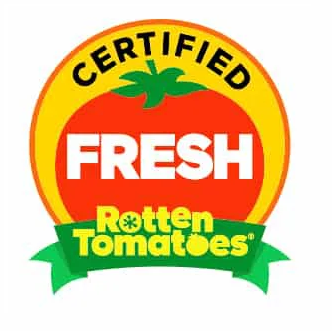
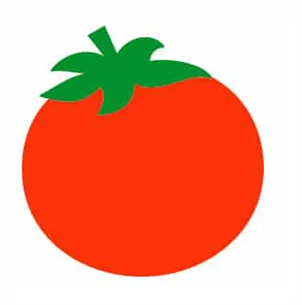
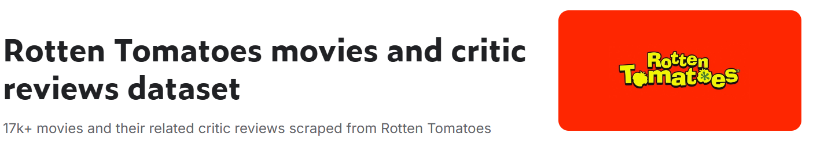
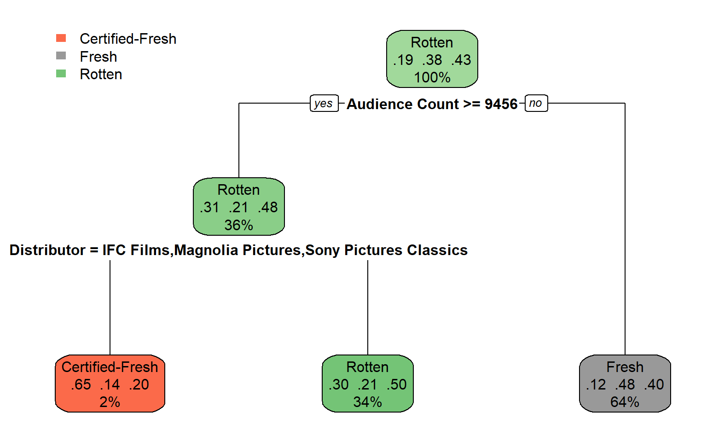
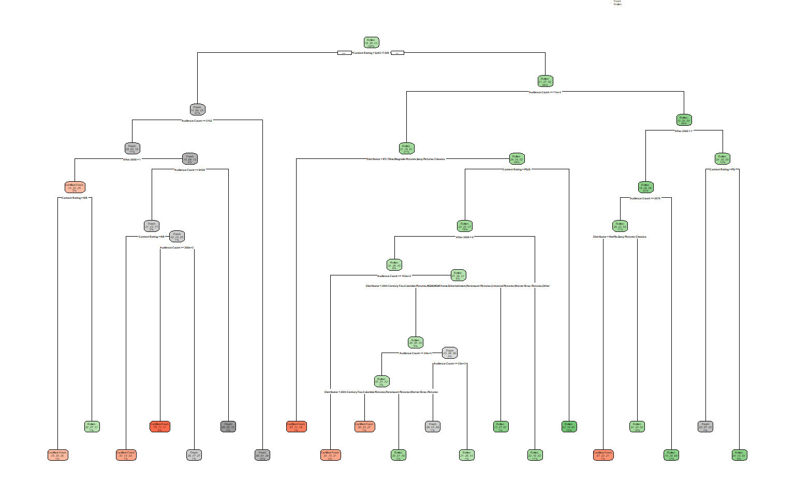

| Rating | Total | % |
|---|---|---|
|  | 3,259 | 18.4 |
|  | 6,844 | 38.7 |
 |
7,565 | 42.8 |
Tree Models
POLS 3220: How to Predict the Future
Today’s Agenda
Last time, we introduced linear models as a machine learning tool.
- The key idea was to make predictions based on a linear combination of predictor variables.
Today, we’ll discuss an approach that combines variables in a nonlinear fashion, called classification and regression trees (CART).
It looks exactly like the probability trees we worked with in the first half of the semester.
Except we let computer to build them for us!
Motivating Problem

Can we predict a movie’s Rotten Tomatoes rating?
Predictor Variables: Content Rating, Genre, Release Date, Distributor, Runtime, Number of Audience Reviews
Outside View
If we had no other information, what would we predict based solely on historical base rates?
. . .
. . .
We can do better!
Classification Trees
- A classification tree works by recursively partitioning the dataset (i.e. repeatedly splitting the data into smaller subsets).
. . .
Classification Trees
With each partition, your prediction becomes less biased.
. . .
Criterion, Searchlight, or A24
| Rating | Total | % |
|---|---|---|
| 118 | 37.2 | |
| 135 | 42.6 | |
|
64 | 20.2 |
Other Distributors
| Rating | Total | % |
|---|---|---|
| 3,105 | 18.4 | |
| 6,396 | 37.9 | |
|
7,357 | 43.6 |
Classification Trees
With each partition, your prediction becomes less biased.
. . .
Audience Count < 10,000
| Rating | Total | % |
|---|---|---|
| 1,293 | 12.0 | |
| 5,052 | 46.9 | |
|
4,427 | 41.1 |
Audience Count >= 10,000
| Rating | Total | % |
|---|---|---|
| 1,811 | 30.8 | |
| 1,193 | 20.3 | |
|
2,870 | 48.9 |
Choosing Splits
What is the “best” way to partition the data?
Up to now, we’ve been choosing our splits based purely on vibes.
A more principled way is to partition the data based on how much information it reveals.
Information Theory: Review
Recall the definitions of information and entropy.
Information is how surprised we are when we learn an outcome. Equal to \(-log(p)\).
Entropy is “expected surprise”: how much surprise we experience on average when we learn the outcome.
If we could perfectly predict the Rotten Tomatoes rating a of movie, then entropy would be zero. (We would never be surprised).
Therefore, our optimal strategy is to seek out information that reduces entropy as much as possible.
Information Theory: Review
| Rating | Total | p |
|---|---|---|
| 3,259 | 0.184 | |
| 6,844 | 0.387 | |
|
7,565 | 0.428 |
Information Theory: Review
| Rating | Total | p | -log(p) |
|---|---|---|---|
| 3,259 | 0.184 | 2.44 | |
| 6,844 | 0.387 | 1.37 | |
|
7,565 | 0.428 | 1.22 |
. . .
\(\text{Entropy} = -\sum p\times log(p)=\) 1.5 bits.
Information Gain
Each time you partition the dataset, it reduces entropy.
This is because you become more certain about your prediction, therefore less likely to be surprised!
The information gain from a partition equals how much it reduces entropy.
Information Gain
Audience Count < 9,000
| Rating | Total | % |
|---|---|---|
| 1,328 | 12.1 | |
| 5,161 | 47.1 | |
|
4,462 | 40.7 |
Entropy: 1.41 bits
Audience Count >= 9,000
| Rating | Total | % |
|---|---|---|
| 1,894 | 31.5 | |
| 1,219 | 20.3 | |
|
2,899 | 48.2 |
Entropy: 1.5 bits
Classification Trees
Trying to find the best partition by hand would be tremendously tedious.
But computers are great at it.
When creating a classification tree, the computer will check thousands of possible partitions, see how much it reduces entropy, and pick the best one.
Classification Trees

How Complex Should The Tree Get?

Bias-Variance Tradeoff
It’s our old friend, the bias-variance tradeoff!
Outside View (zero partitions) is biased.
Inside View (lots of partitions) has higher variance, because your predictions are based on less data.
Sweet spot is somewhere in the middle.
Bias-Variance Tradeoff
- In machine learning, this tradeoff is called overfitting vs. underfitting.
. . .
Next Time
Next time, we’ll talk about how to hit that “sweet spot” between overfitting and underfitting.
And we’ll show how you can harness the wisdom of crowds with machine learning models.
Spoiler alert: we’re going to take a bunch of different classification trees and ask them to “vote” on the best prediction.
The resulting machine learning model is called random forest.